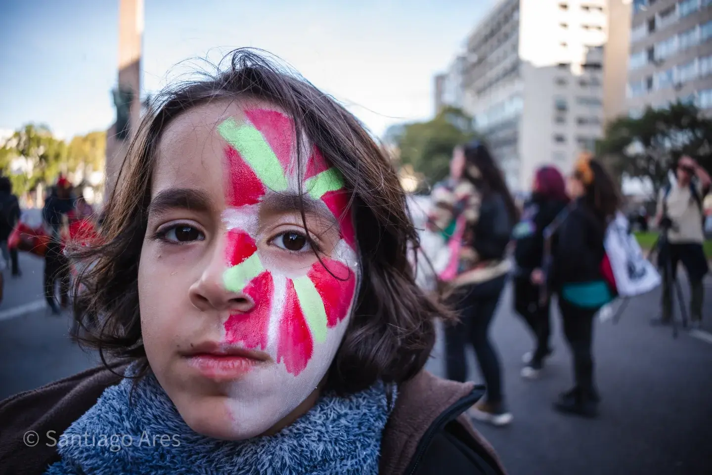

A 32 años del Filtro, la memoria vuelve a marchar
La movilización partirá el lunes 24 a las 18:00 desde el Obelisco bajo la consigna “Solidaridad sin transas, memoria y resistencia”.
Leer la noticiaÚltima noticia

La movilización partirá el lunes 24 a las 18:00 desde el Obelisco bajo la consigna “Solidaridad sin transas, memoria y resistencia”.
Leer la noticiaLa actualidad importa, pero también importa conservar quiénes la documentan y de dónde vienen las ideas que atraviesan nuestra historia.
Archivo Popular nació en Montevideo el 28 de octubre de 2023. Tiene una línea progresista y de izquierda, sin convertir esa identidad en permiso para deformar los hechos.
Verificamos la información y distinguimos datos, declaraciones, versiones e interpretación editorial.
Priorizamos derechos sociales y laborales, democracia, memoria, servicios públicos e integración regional.
La fotografía no es decoración: la acreditamos, la situamos y evitamos recortes que cambien el sentido de los hechos.